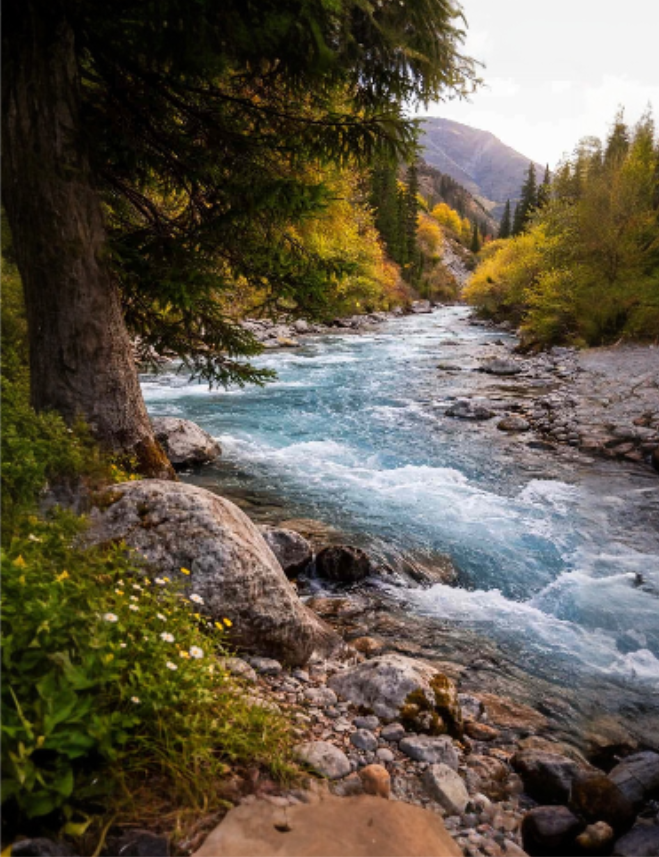
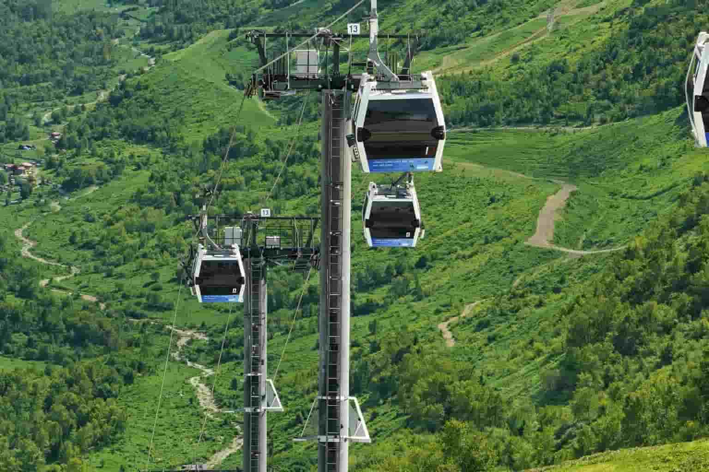
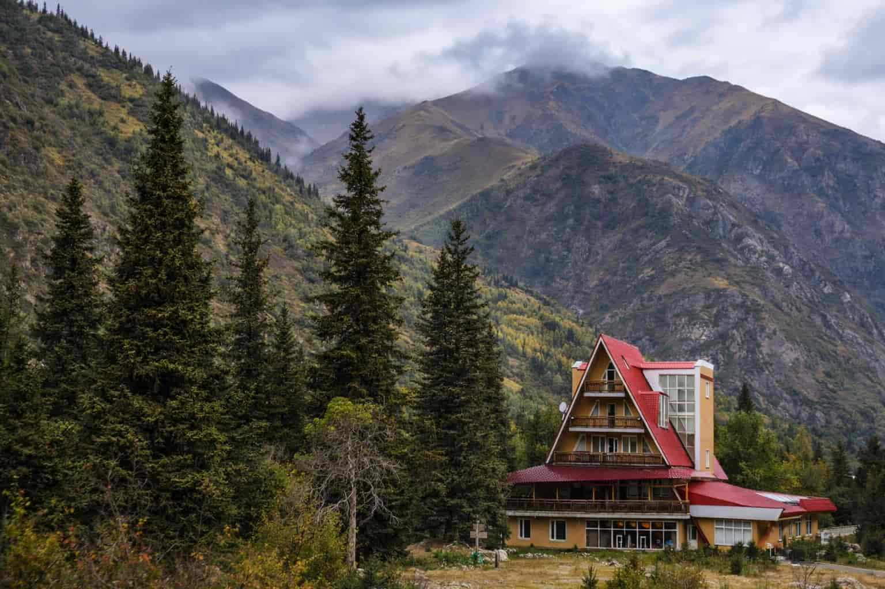
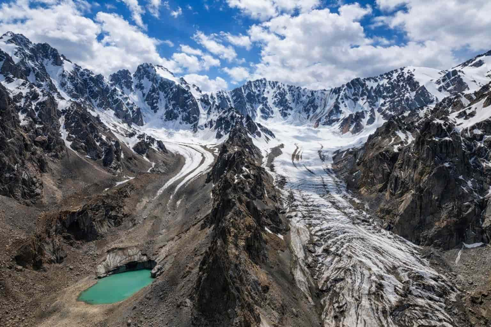
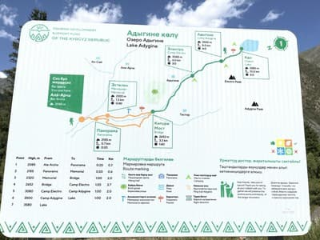
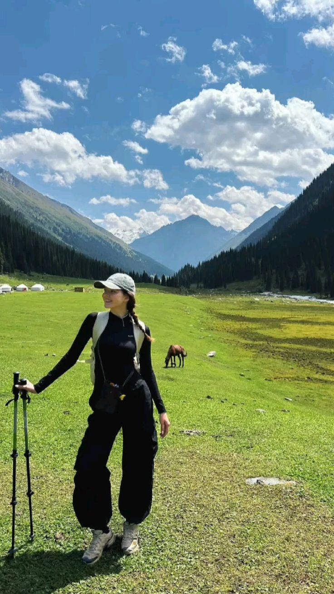
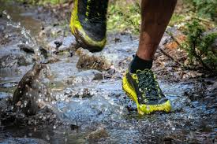
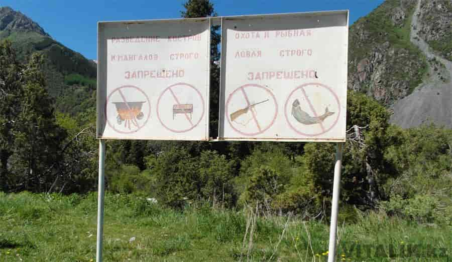
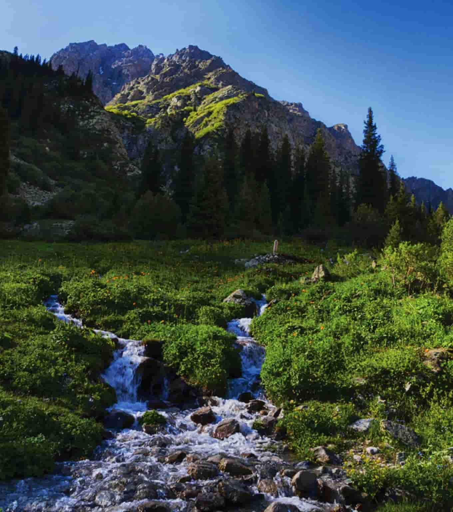

If you want the “Kyrgyzstan mountains” feeling without leaving the city for days, Ala-Archa is the move. It’s close to Bishkek, insanely scenic, and packed with trails — from chilled riverside walks to glacier viewpoints. Expect crisp air, fast-changing weather, and that classic Tian-Shan drama in the background.
What is Ala-Archa — and why is it famous?
Ala-Archa is one of Kyrgyzstan’s most visited mountain parks, sitting about 30 km from Bishkek. The protected area is huge (around 20,000 hectares) and covers a gorge with rivers, spruce & pine forests, and ridges capped with eternal ice.
The name “Ala-Archa” is often translated as “variegated juniper” — a nod to the local archa/juniper and the mix of mountain vegetation.

Easy Valley Walk
A relaxed riverside walk that still feels “high alpine”. Great if you want views without a hard hike.

New Cable Car (2026)
A brand-new gondola cable car now runs inside Ala-Archa. The line is about 1 km long and takes you from 2166 m to 2494 m with epic mountain views. A round-trip ticket costs 600 som.

Alpine Camp (Alplager)
A key base area around ~2000 m altitude — the classic starting point for bigger hikes and climbs.

Peaks & Ice
Serious mountain territory: famous peaks like Semenov-Tyan-Shan (4875 m) and Korona (4860 m) are in the park.
How to get there from Bishkek
Ala-Archa is close enough for a half-day trip, but you’ll want to plan transport smart: go early, save the driver contact (or set return time), and always keep a buffer for weather.
-
Use a taxi app The easiest option is a taxi (round-trip with waiting time). Agree the pickup time at the park.
-

It’s around 30 km from Bishkek Close on the map, but mountain roads + stops can stretch the timing. -
Bring water + snacks Mountain air hits different — even an “easy” walk feels stronger at altitude.

Quick tips before you go
-

Dress in layers Bishkek can be warm while the gorge feels cold — weather changes fast. -

Wear proper shoes Trails can be rocky or muddy (especially near water and higher up). -

Respect the park rules Ala-Archa is protected; hunting is forbidden and wildlife is part of the magic. -

Wildlife exists (but don’t expect a zoo) The park is known for rare species in the ecosystem (even snow leopard is listed).